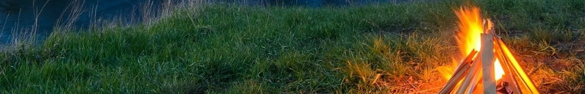

What is this place?
Lighting City is the best place for traveling. It is not big, but people can find mountains, sand beach and sea around the city. The temperature remains around 21°throughout the year. The weather always sunny and less wind. The whole city is like a big resort where people can lay down burden and get the real relax. Light city is more rural so that it is a good place for seniors to move here to live.
What is this place for?
Lighting City is the place for people who have big interesting of sports, because mountain and sea provide good site for them. Besides, senior can have a good relax when they visit here because the climate is truly nice, the food is organic, and everything is peace. Therefore, the city is a heaven for sports enthusiast and senior.